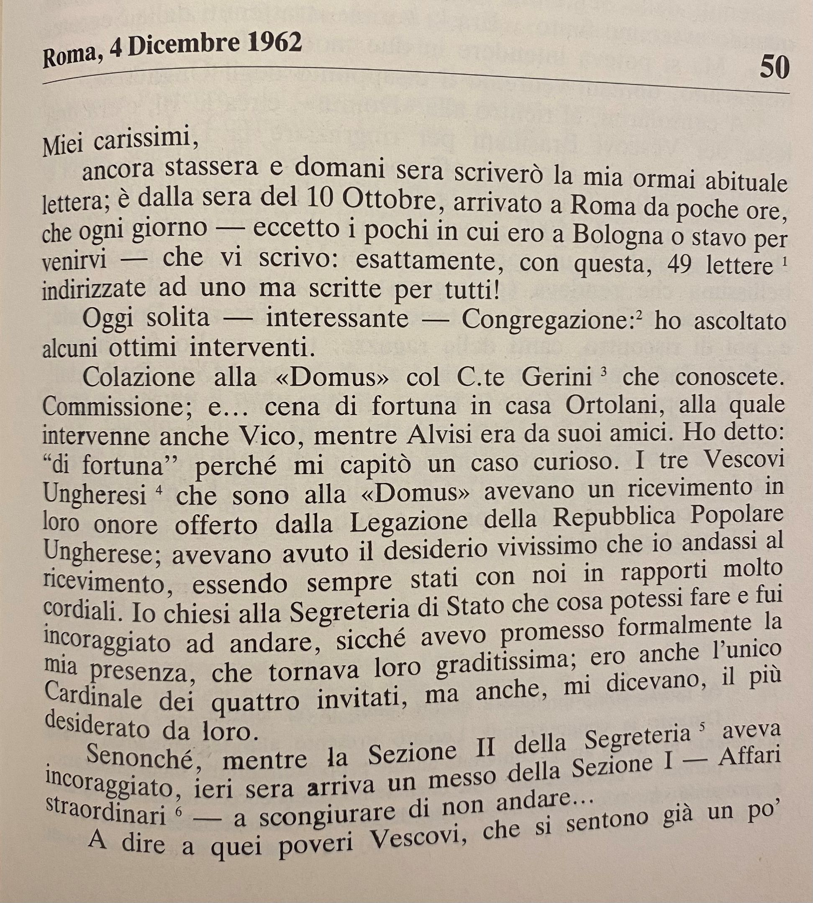
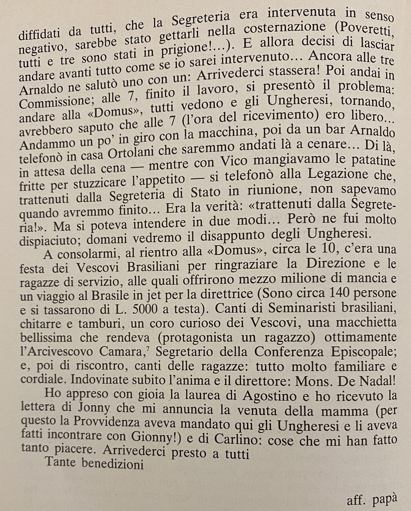

Lercaro, Giacomo : Lettera del 4 dicembre 1962 [50/201]

Pagina 1

Pagina 2
full text
| TITOLO | Lettera 4 dicembre |
|---|---|
| AUTORE | Lercaro, Giacomo |
| DATA | 04/12/1962 |
| DESTINATARIO | Ospiti arcivescovado bolognese |
| UBICAZIONE | Archivio Dossetti, II n. 109 |
| NOTE | Questo documento può essere consultato sia tramite le immagini che tramite il link al full text. |
- link1
- link2
- link3
- link4